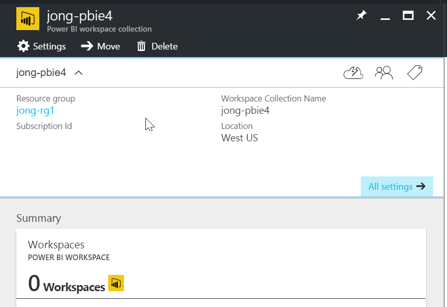

While digging into the new Azure CLI 2.0 to create a Power BI Workspace Collection, I discovered that while you can create the Power BI Workspace Collection you cannot currently get to the Access Keys via the command line. The team is working on it and I will update this post when the CLI 2.0 has official Power BI support.
For now, here’s how to create a Power BI Workspace Collection (and get Access Keys) via the Azure CLI 1.0.
1. Install the Azure CLI
Open a command prompt and execute the following:
|
2. Login to Azure CLI
|
That will output a URL and a code to enter there.
To sign in, use a web browser to open the page https://aka.ms/devicelogin and enter the code B3L4ZYLGA to authenticate.
Go back to your command line and you will now see this:
3. Set Current Azure Subscription
By default, the first Azure Subscription returned is the one that all future actions will be taken on. You can find your subscription list by executing the following:
|
Find the Id of the Subscription you want to work with and then execute the following:
|
You will see the following output:
4. Create Azure Resource Group
You can either create a new resource group or use an existing one. To create a new one, execute the following:
Replace jong-rg1 with your desired resource group name
|
5. Create Power BI Workspace Collection
Enter the following:
Replace jong-rg1 with your resource group name
Replace jong-pbie4 with your desired Power BI Workspace Collection name
Replace westus with your desired location
|
You will see the following output:
6. Get Access Keys
Replace jong-rg1 with your resource group name
Replace jong-pbie4 with your Workspace Collection name
|
You will see the following output.
When you go to the Azure Portal, you will now see your newly created Power BI Workspace Collection.

Now that you have your Workspace Collection and Access Keys, you can follow along with my How to Embed and Filter a Power BI Report with the new Power BI Embedded JavaScript API to learn how to use your keys to embed a Power BI report into your application.
Jon